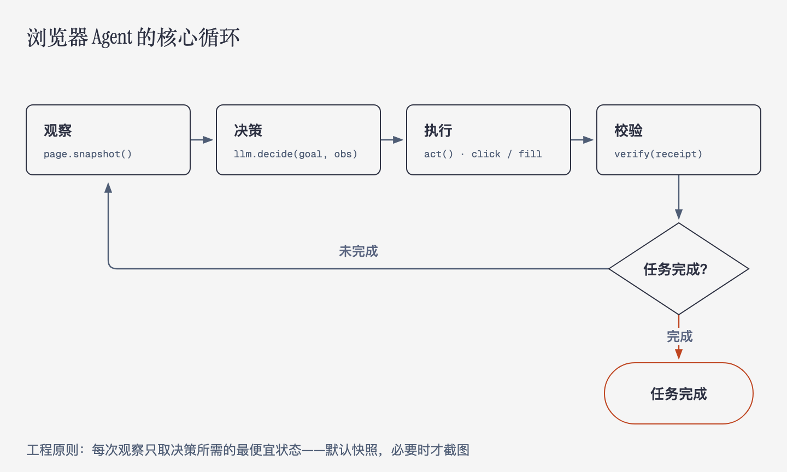
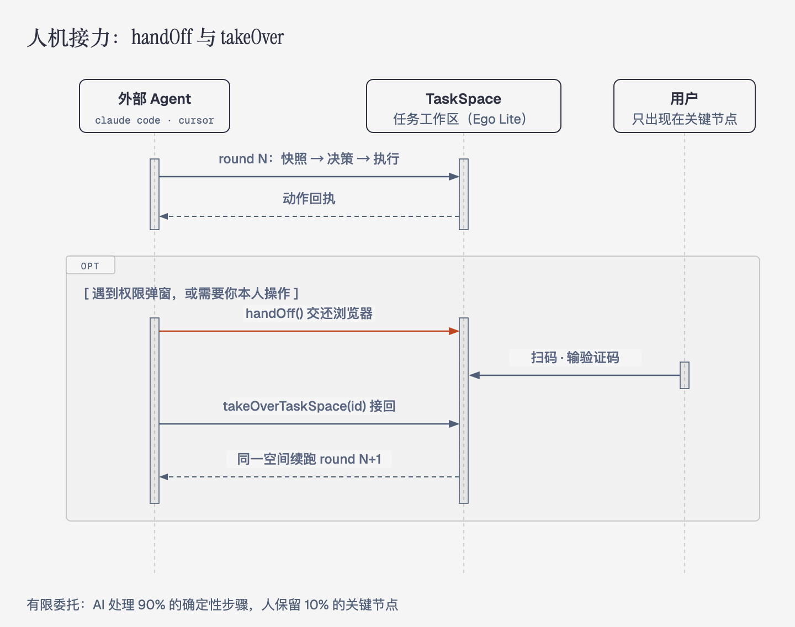

本篇是「任务流自动化」系列第二篇，面向有技术背景的读者，以 ego lite（citrolabs 出品的开源 AI 浏览器，约 8000 star，基于 Chromium，macOS，免费闭源）为主要范例。前作《让浏览器替你上班》讲了场景与价值，本篇讲实现原理。
浏览器自动化的控制面经历了三代：
1. 选择器时代（Selenium / Puppeteer / Playwright）：用 CSS/XPath 定位元素，脚本回放。确定性强，但对页面结构变化的鲁棒性为零。
2. 视觉 Agent 时代（Claude computer use、OpenAI Operator 的早期形态）：截图 + 像素坐标 + VLM 推理。泛化强，但慢、贵、精度受分辨率限制。
3. 语义结构时代（Browser Use、Ego Lite 等）：把 DOM 转成模型友好的语义化中间表示，让 LLM 在"结构化观察 → 决策 → 语义定位动作"的循环里工作，视觉通道降级为辅助。
Ego Lite 的关键差异在部署形态：它不是被 Agent 拉起的隔离浏览器，而是一个用户的日常浏览器（Chromium 152 分支），任何外部 Agent（Claude Code、Codex、Cursor、自研 CLI）都能通过 `ego_*` 工具接口驱动它。这意味着登录态、扩展、profile 全部原生复用——解决了传统方案"自动化环境与真实环境割裂"的老问题。
所有浏览器 Agent 的骨架都是同一个感知-决策-执行循环：
while not done:
obs = observe(page) # 语义快照 / 截图 / 页面状态
action = llm.decide(goal, obs, history)
receipt = act(page, action) # click / fill / navigate / ...
verify(receipt) # 弹窗、对话框、导航结果工程难点不在循环本身，而在每一步的细节。

快照不是截图，也不是原始 DOM。 Ego Lite 的 `page.snapshot()` 输出的是一棵可访问性（accessibility）树驱动的语义化文本表示：每个可交互节点带有 `ref` 编号（如 `@21`）、ARIA role、可访问名称和关键状态。这是当前性价比最高的观察方式：
快照作用域支持 viewport / `full_page` / `subtree`（按 iframe 的 ref 取子树），这解决了跨 iframe 页面的定位问题。工程上有个重要的 cost 原则：每次观察只取决策所需的最便宜状态——默认快照，视觉确认才用截图，避免双通道冗余。
LLM 输出的动作以语义选择器表达，执行引擎负责把它解析成唯一的物理元素：
关键约束是"恰好一个匹配"：选择器命中多个可操作元素时直接报歧义错误而不是随机点一个——这是把 LLM 的不确定性挡在执行层之外的防御式设计。定位策略有明确的降级顺序：顶文档的可操作匹配优先，找不到才搜索嵌套 shadow root 和 iframe；DOM 语义不可用（canvas 编辑器、地图、表格类应用）才降级到 screenshot + `mouse.click(x, y)` 坐标通道。
执行还处理大量"脏细节"，这些才是自动化的真实工作量：
Ego Lite 在浏览器之上抽象出 TaskSpace（任务工作区）：

对上层 Agent（Claude Code 等）来说，每个脚本调用是一个无状态的 round：JS 变量不持久，但 TaskSpace、Page 标签、页面状态持久。这个设计使 LLM 的多轮推理天然映射到"round N 末尾打印快照 → round N+1 基于快照行动"的状态传递模式。
| 维度 | Playwright/Selenium | Browser Use | Operator/computer use | Ego Lite |
|---|---|---|---|---|
| 定位方式 | CSS/XPath 手写 | DOM 序列化 + LLM | 截图 + 像素坐标 | 语义快照 + 语义选择器 |
| 运行环境 | 独立/无头浏览器 | Agent 拉起的隔离实例 | 沙箱 VM | 用户日常浏览器本体 |
| 登录态/扩展 | 需单独配置 | 需单独配置 | 隔离 | 原生复用 |
| 驱动方 | 代码 | Python/JS 框架 | 官方封闭 Agent | 任意外部 Agent（`ego_*` 工具） |
| 人机切换 | 无 | 弱 | 平台内 | handOff/takeOver 协议 |
值得注意的产业趋势是控制面与 Agent 面解耦：Browser Use 把"手"做成库，Operator 把"手+脑"封闭成产品，Ego Lite 则把"手"做进浏览器、把"脑"完全开放给任意外部 Agent。后者的本质是把浏览器变成 Agent 生态的一层标准外设——类似 MCP 对工具生态的意义。
1. 验证闭环：receipt 只描述"动作已派发"，不保证业务结果正确。"点击成功"≠"下单成功"，可靠自动化需要应用层断言或事后核验机制。
2. 长程规划与状态漂移：多步任务中页面状态、SPA 路由、懒加载都会使中间快照过期；目前主流做法是"小步观察 + 短程批量动作"，真正的 hierarchical planning 仍不成熟。
3. 成本与延迟：每步一次 LLM 决策，复杂任务动辄数十次调用。语义快照已大幅压缩输入 token，但动作级缓存的收益空间仍大。
4. 安全模型：登录态复用是双刃剑——prompt injection（网页内容诱导 Agent 执行恶意操作）在"AI 拿着你全部 session"的形态下风险被放大。能力沙箱、动作白名单、敏感操作强制 handOff 会成为标配。
5. 反爬与平台博弈：自动化流量识别 vs. 语义化输入（真实键盘/滚轮事件）之间的对抗会长期持续，合规边界需要产品层面自律。
浏览器自动化的演进方向已经很清晰：定位从选择器到语义，观察从像素到结构，执行从脚本回放到目标驱动，权限从全有全无到人机接力。Ego Lite 这类产品的价值不在于某个单点技术，而在于验证了一个架构判断：让 AI 在人真实使用的环境里工作，比让人迁就 AI 的沙箱环境更接近自动化的终局。第二篇到这里，建议回到第一篇的场景清单，挑一个真实任务跑通全流程——原理只有在落地时才真正属于你。
本文属于「任务流自动化」系列，系列目录见 zhaochenyang.github.io/automation。转载请注明出处。